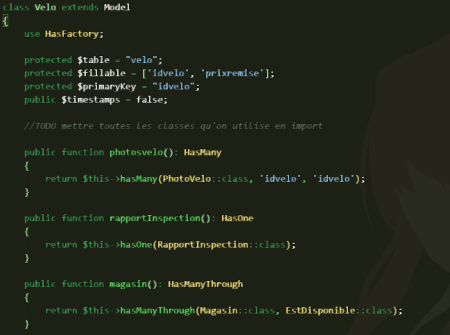
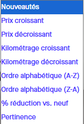

Durant ma 2ème année de BUT Informatique, j'ai eu l'opportunité de mettre en place mon apprentissage dans un groupe de 5 étudiants dans la conception et le développement d'un site e-commerce de vente de vélos électriques d'occasion pour le client fictif Upway
Pour structurer les données de l'application, nous avons utilisé les modèles de Laravel. Chaque table de la base de données a été représentée par un modèle, permettant de définir clairement les relations entre les données et de garantir une organisation cohérente et adaptée aux besoins fonctionnels. Les modèles regroupent toutes les méthodes pour récupérer les données depuis la base de données, elles peuvent être variées en fonction des besoins de l'application (tous les vélos, juste un, tous ceux qui ont des VTT, ...)


Pour répondre à des besoins plus complexes, nous avons mis en place des traitements algorithmiques combinant filtre et ordres d'affichage. Ces techniques permettent de proposer des résultats pertinents à l’utilisateur tout en limitant le nombre de traitements inutiles et en optimisant les requêtes. L'utilisateur peut filtrer sa recherche et également trier l'afficher de plusieurs manières (Pertinance, Prix Croissant/Décroissant, ...)
La sécurité des données a été prise en compte tout au long du développement. L’utilisation du framework Laravel permet de limiter les risques d’injection SQL et de renforcer la gestion des données sensibles grâce à la validation des entrées. L'accès du code et de la base de données a été sécurisé par un mot de passe hasher.
Les choix techniques réalisés prennent également en compte l’impact environnemental et sociétal. L’optimisation des requêtes, l’utilisation de la pagination pour limitation des chargements inutiles permettent de réduire la consommation de ressources serveur. Mais également, une interface claire et accessible améliore l’expérience utilisateur et rend l’application plus inclusive.